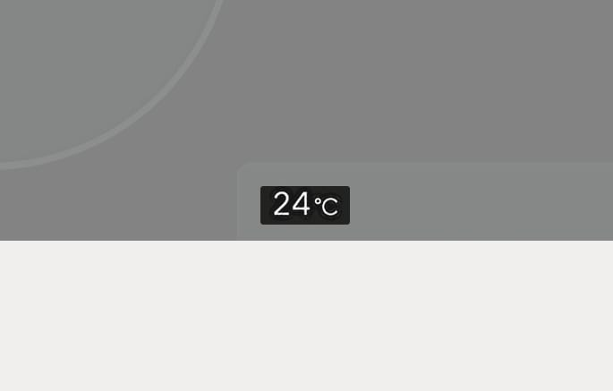

외기 온도

2C_OutsideTemp
차량 외부의 온도를 표시합니다.
-
차량에 설치된 외기 온도 표시 장치는 일반 온도계와 달리 온도 변화를 즉시 반영해 표시하지 않습니다.
-
온도 단위를 변경하려면 인포테인먼트 시스템에서 설정 > 일반 > 단위설정 > 온도 단위를 선택하십시오.
-
외기 온도 표시 단위를 변경하면 히터 및 에어컨의 온도 단위도 동시에 변경됩니다.
-
업데이트로 인해 인포테인먼트 시스템의 상세 설정이 변경될 수 있습니다. 자세한 설정 방법은 인포테인먼트 시스템 웹 매뉴얼을 참고하십시오.